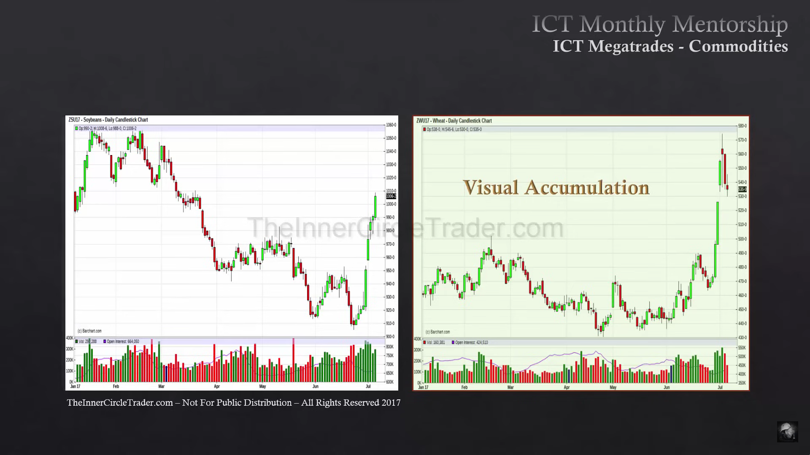

SMT (Smart Money Divergence)
Inhalt
SMT (Smart Money Divergence)
Divergenz-Analyse zwischen korrelierten Märkten: Wenn ein Markt ein neues High/Low bestätigt, ein korrelierter Markt dies aber nicht bestätigt (failed high/low), ist das ein Frühwarnsignal für einen bevorstehenden Trendwechsel — "Crack in Correlation".
Beispiele aus den Quellen
- Bonds: 5-Year macht Lower Low, 10-Year failed (Higher Low), 30-Year Equal Lows → Korrelation bricht auseinander, Swing-Low-Signal. 3 Lows zur Bestätigung nutzen, Wicks zur Absicherung.

- Commodities: Soyabohne vs. Wheat (Corn/Soybeans/Wheat laufen normalerweise im Tandem). Divergenz (z.B. Sojabohne macht weiter Lower Lows, Wheat konsolidiert mit leichten Higher Lows) stützt eine Bias-These zusätzlich zu Relative-Strength- und OI-Analyse.

Sojabohne (links) auf Wheat (rechts) gelegt: Sojabohne bildet weiter Lower Lows, während Wheat mit leichten Higher Lows konsolidiert — klassische SMT-Divergenz zwischen zwei normalerweise gleichlaufenden Agra-Märkten.
Symmetrical vs. Non-Symmetrical Market
Vergleich zweier korrelierter Assets (z.B. DXY vs. NQ/ES — "Institutional Marketstructure"):

- Symmetrical Market: beide Charts bestätigen die gleiche Struktur (beide Higher High oder beide Lower Low) → Trend setzt sich mit hoher Wahrscheinlichkeit fort, Reversal unwahrscheinlich.
- Non-Symmetrical Market: ein Chart macht ein Higher High, der andere schafft kein Lower Low mehr (macht stattdessen ein Higher Low) → klassisches SMT-Divergenzsignal, Reversal wahrscheinlich.
Forex: immer gegen den DXY
Aus dem Market Maker Primer — die einfachste Anwendung, und ausdrücklich als Bestätigungswerkzeug, nicht als Signalgeber gedacht:
„Im Forex geht es immer um den DXY. Die Paare sollen failen, ein Higher High oder Lower Low zu kreieren."
- Bearish: EURUSD macht ein Lower Low, der DXY schafft kein Higher High → Crack in Correlation.
- Bullish: DXY macht ein Higher High, der AUDUSD macht kein Lower Low, sondern konsolidiert — Anzeichen dafür, dass Smart Money am Kaufen ist.
- Immer denselben Timeframe für beide Charts verwenden.

USDX (oben) gegen AUDUSD (unten) im H1: der Dollar-Index läuft nach oben, AUDUSD folgt nicht nach unten.
Cross-Asset-Bestätigungsregel
Ein neues signifikantes High/Low im DXY muss sich zwangsweise auch in den Bonds/Yields widerspiegeln. Ist das nicht der Fall, handelt es sich um reine Manipulation, um Trader zu offsetten (kein echter Trend-Move). Für OI-Vergleiche den Future-Contract mit dem höchsten Open Interest nehmen.
Trade-Qualifikation über Yields (Bonds/USDX/Yields-Dreiklang)
- Alle drei Charts (Bonds, USDX, Yields) müssen SMT-mäßig zusammenpassen, bevor ein HTF-Trade als "qualifiziert" gilt. Beispiel: Bonds Lower Low + USDX Lower High + fallende Yields + passende Seasonal Tendency = starkes, stimmiges Signal (Money seeks Yield → fallende Yields drücken USDX, heben Bonds).

- Passt die Korrelation zwischen den drei Charts nicht zusammen, ist der Trade unqualifiziert — besondere Vorsicht bei Higher-Timeframe-Entries.
- Yields sind der maßgebende Faktor: konsolidieren die Yields, konsolidiert in der Regel der gesamte Rest-Markt mit; trenden die Yields klar, bewegt sich auch der übrige Markt.
- Kombiniert mit Quarterly Shift und Seasonal Tendency ergibt sich die vollständige Qualifikations-Checkliste für einen HTF-Trade.
Verwandt
- Bond Mega-Trades, Commodity Mega-Trades
- Open Float & Liquidity Pools — OI-Analyse wird oft parallel zu SMT genutzt
- Intermarket Relationships
- Quarterly Shift, Seasonal Tendency
Was zeigt hierher 24
- CISD (Change in State of Delivery)Konzepte
- Commodity Mega-TradesModelle
- Commodity Mega-Trades (Source)Quellen
- COT (Commitment of Traders) DataKonzepte
- Drei-Ebenen-MarktperspektiveKonzepte
- ICT 2022 - Episode 07 Daily Bias - SMT (Source)Quellen
- ICT Mentorship Core Content - Month 04 - Divergence Phantoms (Source)Quellen
- Katalog (Original)Meta
- Institutional Marketstructure (Source)Quellen
- Intermarket RelationshipsKonzepte
- ÄnderungsprotokollMeta
- Macro Economic To Micro Technical (Source)Quellen
- Market Maker Primer Course (Source)Quellen
- Momentum-Divergenz als Retail-Falle (Divergence Phantoms)Konzepte
- Month 03 (Source)Quellen
- Month 05 (Source)Quellen
- Month 11 (Source)Quellen
- Muster-Validierung (laufend)Synthese
- NY PM TrendModelle
- Open Float & Liquidity PoolsKonzepte
- Premium vs. Carrying Charge MarketKonzepte
- Qualifying Trade Conditions With 10 Year Yields (Source)Quellen
- Smart Money Concepts (SMC)Konzepte
- SMT Smart Money Technique (Source)Quellen